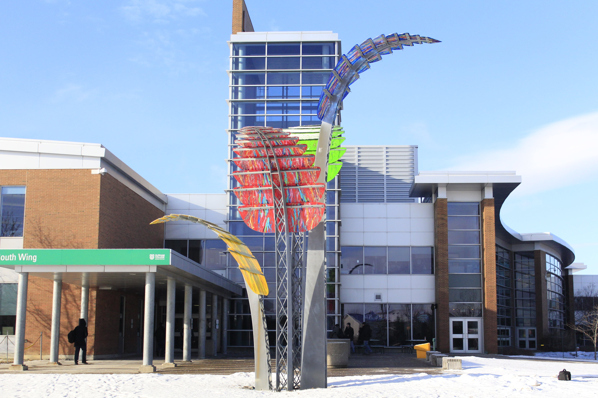

Just outside the Durham College’s South Wing entrance of the Gordon Willey building sits the ‘Compass’. It is a massive sculpture of four large towers next to the building with colourful panels resembling that of falling leaves in autumn. That’s at least one of the visions that former faculty member Darlene Bolahood had when she first came up with the inspiration for her artwork.
It all started back in the beginning of 2005 when the south wing campus was being built and UOIT was in its early years. “They were very interesting dynamic days of growth,” said Bolahood for students and teachers alike. Teaching digital animation at Durham at the time, Bolahood saw the campus grow and wanted to leave her own mark at Durham. She wanted to build a similar sculpture piece she made had made at Fleming College. Teaching art classes at that college as well, Bolahood had made a small tower with a large yellow leaf. Bolahood thought she could expand that sculpture at Fleming for Durham College and the idea of the four towers of the compass appeared. Her idea was to build the four tower to align to true north so that whenever the sun reach the tower at 12 o’clock, it would point to solar noon. She saw her piece representing time, direction, and the freedom of choice.
She had the idea and concept art ready to present and went to Durham College and UOIT president Gary Polonsky to ask if she could create her towering piece for the campus and he agreed with excitement. With fellow art students; together they constructed the piece in less then a year. Bolahood made sure that everything was correct. The colours in the pieces were taken from two sets of primary. One is was RGB, which are digital colours and the other colours set at the red, yellow, blue; red, yellow, blue being primary colours for a painter. Using the sense of primary colours, it pointed to direction, it has a sense of time and relates to the sun. She got specialists to use GPS to align the towers to true north and coated the panels with ultraviolet varnishes and materials to preserve the colours from fading away.
After everything was done, on September 1, 2005, sometime around noon, Bolahood remembers, it was finished. “The morning it went up, people were walking in, and of course looking at the ground, and the pavement ahead of them and you could watch their faces as they sort of looked ahead and look up and went wow, you know colours,” said Bolahood.
She loved her years teaching at Durham College and she’s glad to know it’s still here. The art piece wasn’t only her final piece for Durham but also her final art piece for her masters for the University of Waterloo at the time. Darlene Bola hood is now a full-time teacher at Fleming College in the Visual and Creative Arts and Studio Process Advancement programs.